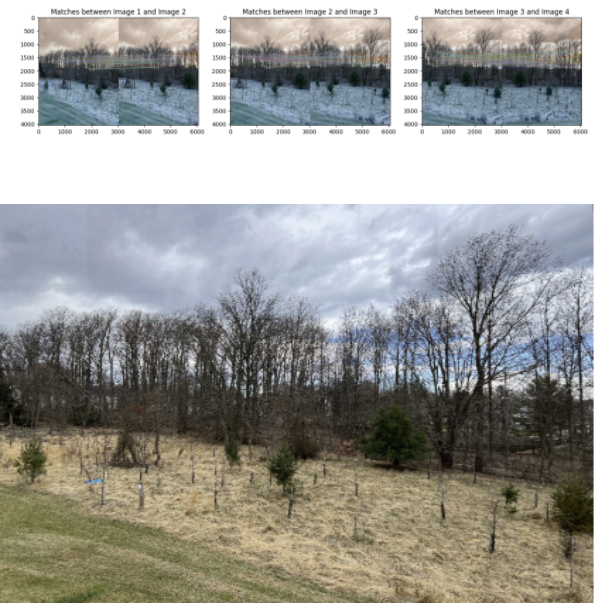

Explore the application of PowerBEV, a robust yet lightweight framework for instance prediction in a bird's-eye view on Toyota's Woven Dataset. This project introduces a novel feature extractor to the architecture, demonstrating enhanced performance. Additionally, the results gathered by the implementation from scratch on Woven are meticulously compared with the NuScenes dataset, showcasing the framework's effectiveness in real-world scenarios and also sub optimal generalizability on other datasets.

Explore our team's journey in the ARIAC (Agile Robotics for Industrial Automation competition) 2023, where we engaged in simulated manufacturing tasks to push the boundaries of robotic systems. The competition, hosted by NIST, assessed our capabilities in handling challenges like material assembly, quality inspection, and process optimization in a ROS2 and Gazebo simulated environment.Our Team showcased innovative solutions, including efficient kitting, dynamic pick and place on and from the conveyor belt, precise assembly, and addressing agility challenges such as High Priority orders, Defective parts, Insufficient Orders, Flipped Parts and Faulty Gripper. The project's architecture is centered around pick-and-place tasks, utilizing cameras and sensors for detection, resulting in a successful demonstration of the ARIAC.

Developed a versatile 9-degree-of-freedom mobile manipulator robot in Gazebo, designed for exploration, object manipulation, and pick-and-place tasks. The robot showcased its capability to perform tasks such as cleaning larger objects that a Roomba cannot handle effectively. The project involved validating the forward and inverse kinematics of the robot, which includes a differential drive mobile base and a robotic arm. The closed-loop control mechanism, along with Gazebo and RViz visualizations, demonstrated the robot's effective navigation and pick-and-place operations. Despite encountering challenges, the project successfully laid the foundation for future advancements in this space.
This project explores enhanced path planning for TurtleBot in 2D and 3D environments through a comparative analysis of RRT and its variants. The implemented RRT*, RRT*-Smart, and RRT-Connect algorithms are evaluated and compared for efficient navigation. The project provides simulation results in Gazebo, showcasing the execution of each algorithm. The repository includes instructions for running 2D path planning algorithms and 3D simulation and visualization in Gazebo and Rviz respectively. Valuable insights into the strengths and weaknesses of RRT variants are presented, contributing to optimized path planning strategies for TurtleBot.
This project presents a comprehensive technical report and simulations on adaptive control for Unmanned Aerial Vehicles (UAVs) equipped with a 5 DOF robotic arm. The motion control challenges of an end effector attached to a quadrotor are addressed through a hierarchical control architecture, emphasizing control schemes and stability analysis. The outputs showcase the end effector trajectory, control architecture block scheme, position and rotation error analysis, and the end trajectory.
This project involves the CAD modeling of a Formula 1 car in Solidworks, its conversion to a URDF file, and subsequent simulation and visualization with attached sensors in Gazebo and Rviz respectively. The goals include adding Lidar sensor modules, creating a competition arena, and implementing TeleOP for navigation. The project flow covers creating part models, assembling the car, exporting as URDF, configuring controllers, and integrating Lidar sensors. The Simulation videos showcase TeleOP and Publisher-Subscriber functionalities.
Developed a project, centered around the simulation of TurtleBot3 in Gazebo. The project leveraged fiducial markers for precise navigation and reaching the desired location. Utilizing ROS2, the simulation involved writing a broadcaster, locating fiducial markers, and executing movement to the goal position and correct orientation.
This project enhances autonomous vehicle control by integrating imitation learning with Model Predictive Control (MPC) within the AirSim simulator. We use MPC controller to collect data and train the model with an adaptive neural networks, improving steering, throttle and braking inputs. The methodology includes experiments with LIDAR-based obstacle detection, waypoint-driven scenarios, and tries to addresses challenges like the simulation-to-reality gap. While showcasing results, the project acknowledges limitations and provides valuable insights for ongoing research in deep learning for autonomous vehicles.

This project integrates the optimal optical flow approach, determined through a comparison of classic algorithms (Lucas-Kanade, Farneback) and the advanced deep learning method RAFT (Recurrent All-Pairs Fields Transforms). The selected optical flow method is combined with YOLO (vehicle detection) contributing to vehicle speed estimation. Deployed on a Raspberry Pi 4-based robot rover, the project showcases real-world applicability, with certain limitations.
In this project, I employed the EffnetB2 and ViT base 16 models for efficient feature extraction. These feature extractors underwent training on the foodvision101 dataset. Following the training, I examined the loss curves and stored feature extractor statistics for both models. Subsequently, I conducted a comprehensive comparison of the model results, prediction times during inference, and model sizes to identify the best-performing feature extractor. The chosen model was then utilized to develop the application demo using Gradio, ensuring best practices for packaging files. The final step encompassed deploying the application on Hugging Face spaces.
Implemented classical and deep learning approaches for superpixels and image segmentation in this project, utilizing the MSRC Object Recognition Image Database. Superpixel segmentation was carried out through Kmeans clustering and the SLIC algorithm from scratch. A superpixel patch dataset was created from the MSRC dataset by applying SLIC to it, and the data was prepared for segmentation tasks. ResNet50 was employed for feature extraction, LR scheduling was applied and the model was trained, evaluated, and fine-tuned. Outputs were visualized and advanced techniques like feature fusion were utilized. This project demonstrates versatility in handling custom datasets, ensuring efficient data processing, and exploring enhancements for improved model performance.
In this project, I explored Implicit Neural Representation (INR) with hands-on experience of parameterizing signals with a neural network. Implemented a SingleImageDataset for image processing, defined a feedforward neural network (FFN) tailored for INR and configured the model training setup with criteria (pixel-wise MSE loss), an optimizer, and LR scheduler. Trained the network visualized the loss plots. Reconstructed images using the trained model and computed PSNR for accuracy assessment. Additionally outpainted the image by predicting 20 pixels beyond the original image boundaries.
This project covers various aspects, starting with Image Captioning using Vanilla RNNs, progressing to Image Captioning with LSTMs, and further exploring Network Visualization techniques such as Saliency maps, Class Visualization, and Fooling Images. The tasks range from addressing challenges in caption generation with Vanilla RNNs to achieving enhanced results with LSTMs. Additionally, the project provides implementation of a Transformer decoder for image captioning tasks.

Implemented a comprehensive pipeline for Stereo Vision and Depth Perception. This project involves tasks such as camera calibration, rectification, correspondence, and depth computation. Using ORB feature extraction, I estimated Fundamental and Essential matrices, achieving translation and rotation decompositions. The rectification pipeline employed perspective transformation and homography matrices, visualizing effects through epipolar lines. The correspondence pipeline featured matching windows and disparity calculation, generating disparity heat maps. Lastly, the depth computation pipeline calculated depth values, providing grayscale and color heat maps for visualization.

Implemented Camera Pose Estimation and Image Stitching using classic computer vision methods from scratch. Homography for camera pose estimation, involving an image processing pipeline with steps like Hough transform and decomposition for rotation and translation. Additionally, performed image stitching to create a panoramic view by extracting features, matching, and applying homographies for seamless blending. Overcame challenges in edge detection, rotation, translation, and stitching, showcasing problem-solving skills in computer vision.

In the world of 3D Indoor Mapping and Object Segmentation, where RGB images fuel a cutting-edge approach for autonomous robot navigation in complex Environments. This project integrates SimpleRecon and Point-Voxel CNN, employing depth maps, 3D reconstruction, and point cloud segmentation. Leveraging state-of-the-art technologies like Infinitam and Open3D, our methodology transforms indoor environments into efficient 3D representations. The project showcases a fusion of advanced mapping techniques and neural network segmentation models contributing to the indoor robotic navigation space.
This project unfolds insights into implementing PointNet-based architectures for both classification and segmentation tasks. Defined Models to handle input points from diverse classes and explored model initialization, training, and testing procedures. PointNet was applied in segmentation tasks, and robustness analysis experiments were performed to evaluate the model's performance under different conditions.
This project involves differentiable volume rendering, including ray and point sampling, volume rendering techniques, and the emission-absorption model. Optimization includes ray sampling, loss functions, and training strategies for both basic implicit volumes and Neural Radiance Fields. The implementation of NeRF as a Multi-Layer Perceptron, loss formulation for RGB image training, and visualization techniques further enhance the project.
This Project focuses on single-view to 3D transformation. It highlights the design of neural networks for image-to-voxel grid, image-to-point cloud, and image-to-mesh models. Binary cross-entropy and Chamfer loss functions for voxel grids and point clouds, respectively. The inclusion of quantitative comparisons, hyperparameter analyses, and insightful visualizations provides a thorough understanding of the application.

In this project, mesh rendering, camera manipulation for 360-degree gifs, implementation of the Dolly Zoom effect, creation and rendering of 3D shapes, re-texturing of meshes based on vertex positions, camera pose transformations and additionally, rendering generic 3D representations is implemented. The project also explores implicit surfaces, employing implicit functions to define surfaces and discussing the trade-offs between mesh and point cloud rendering.